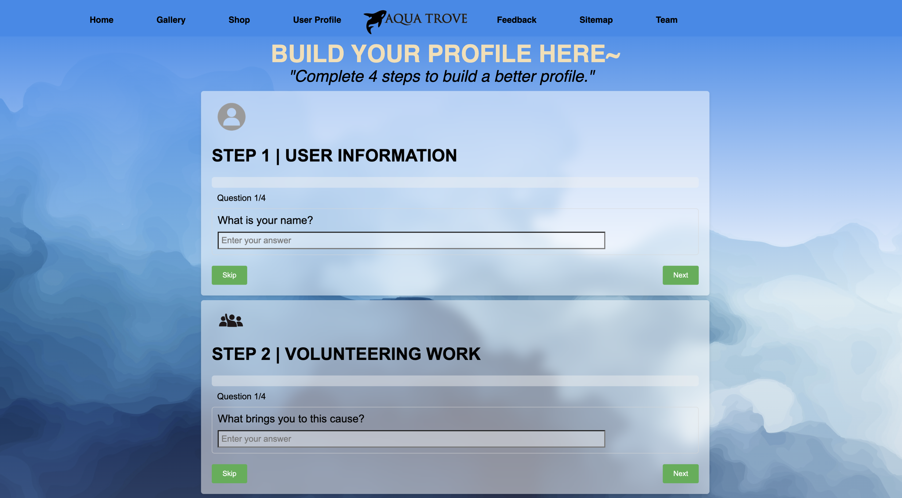
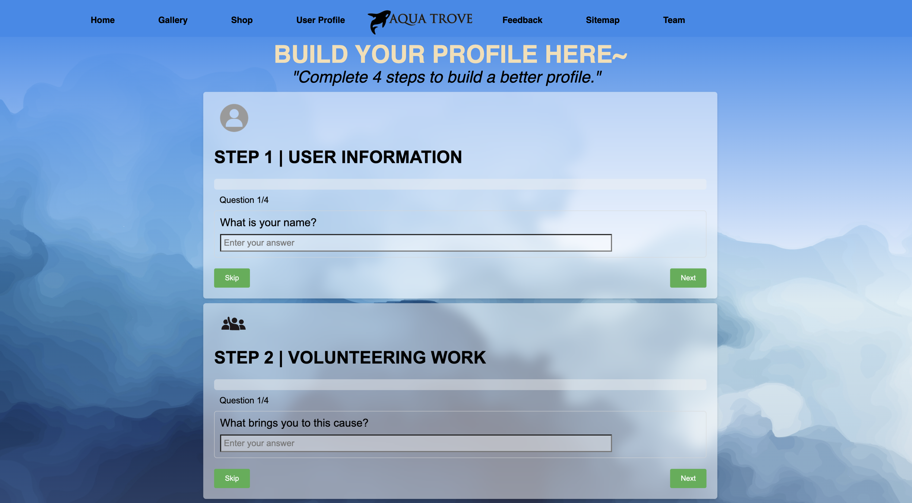
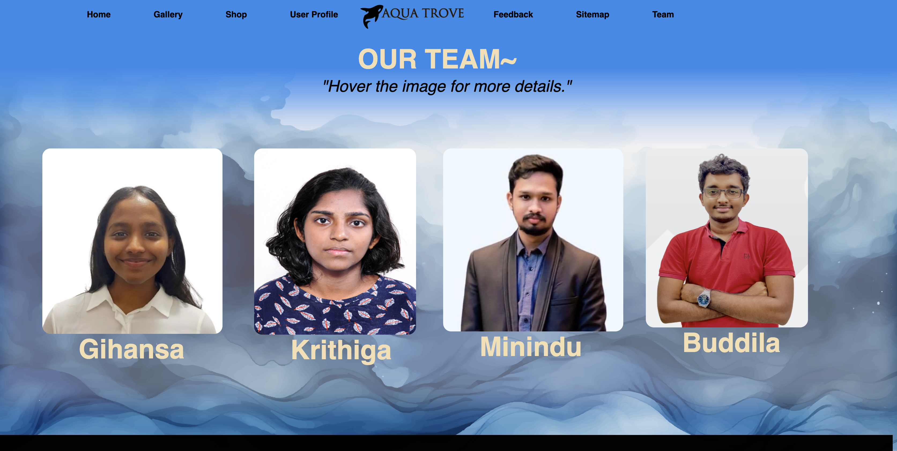
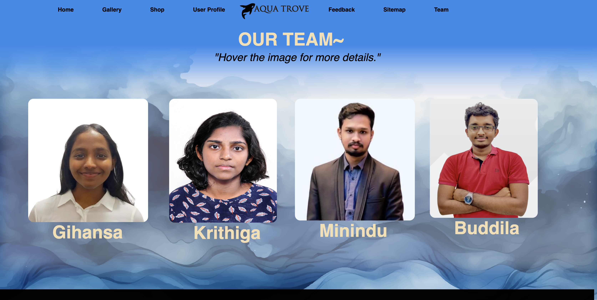

Minindu Himal
Role: Student 3
Id- W2051531 / 20230019
Role: Student 3
Id- W2051531 / 20230019
1.USER PROFILE
The user is developing a user profile page that employs a progressive form approach to gather user information. This involves presenting users with a series of prompts, organized into categories such as personal details, tasks, qualifications, and others, guiding them through the profile completion process gradually. The form is designed to be concise and clear, with at least 12 prompts spread across 3 steps. Additionally, the system provides feedback on the completion progress of the user's profile.  Go to page >
The user is developing a user profile page that employs a progressive form approach to gather user information. This involves presenting users with a series of prompts, organized into categories such as personal details, tasks, qualifications, and others, guiding them through the profile completion process gradually. The form is designed to be concise and clear, with at least 12 prompts spread across 3 steps. Additionally, the system provides feedback on the completion progress of the user's profile.  Go to page >
2.TEAM MEMBER PAGE
The team page for the website will showcase interactive thumbnails that, upon hovering, display extended details about each team member's contributions. The page aims to provide users with insights into the team members who contributed to the website's development.  Go to page >
The team page for the website will showcase interactive thumbnails that, upon hovering, display extended details about each team member's contributions. The page aims to provide users with insights into the team members who contributed to the website's development.  Go to page >
3.CONTENT PAGE-1
The task entails developing an additional content page related to the website's theme of ocean pollution. The page should contain comprehensive information regarding the causes, effects, and potential solutions to ocean pollution. Go to page >
Go to page >
The task entails developing an additional content page related to the website's theme of ocean pollution. The page should contain comprehensive information regarding the causes, effects, and potential solutions to ocean pollution.
Go to page >
4.PAGE EDITOR
Team members create an editor's page with their name, role, and tasks. This page is distinct from the main website and allows for creativity. It includes links from and back to the team member's pages, opening in a new tab. Go to page >
Team members create an editor's page with their name, role, and tasks. This page is distinct from the main website and allows for creativity. It includes links from and back to the team member's pages, opening in a new tab. Go to page >